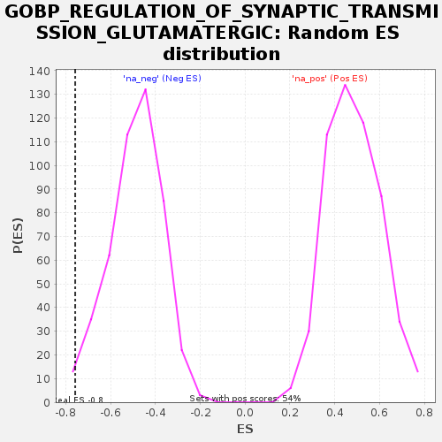

Profile of the Running ES Score & Positions of GeneSet Members on the Rank Ordered List
| Dataset | GEP2_vs_GEP6_residuals |
| Phenotype | NoPhenotypeAvailable |
| Upregulated in class | na_neg |
| GeneSet | GOBP_REGULATION_OF_SYNAPTIC_TRANSMISSION_GLUTAMATERGIC |
| Enrichment Score (ES) | -0.75797284 |
| Normalized Enrichment Score (NES) | -1.5553497 |
| Nominal p-value | 0.010752688 |
| FDR q-value | 0.6559878 |
| FWER p-Value | 1.0 |
| SYMBOL | RANK IN GENE LIST | RANK METRIC SCORE | RUNNING ES | CORE ENRICHMENT | |
|---|---|---|---|---|---|
| 1 | CCR2 | 455 | 0.000 | -0.0437 | No |
| 2 | ADORA2A | 614 | 0.000 | -0.0440 | No |
| 3 | DISC1 | 756 | 0.000 | -0.0491 | No |
| 4 | TSHZ3 | 881 | 0.000 | -0.0565 | No |
| 5 | NLGN2 | 951 | 0.000 | -0.0558 | No |
| 6 | RELN | 1150 | 0.000 | -0.0855 | No |
| 7 | TNF | 1375 | 0.000 | -0.1235 | No |
| 8 | DKK1 | 1830 | 0.000 | -0.2111 | No |
| 9 | STXBP1 | 1854 | 0.000 | -0.2121 | No |
| 10 | NTRK1 | 2321 | 0.000 | -0.3043 | No |
| 11 | CCL2 | 2347 | 0.000 | -0.3079 | No |
| 12 | GRIK2 | 2582 | 0.000 | -0.3544 | No |
| 13 | PLPPR4 | 2590 | 0.000 | -0.3554 | No |
| 14 | NRXN1 | 2938 | -0.000 | -0.4242 | No |
| 15 | ATP1A2 | 2962 | -0.000 | -0.4278 | No |
| 16 | GRIN2A | 3224 | -0.000 | -0.4781 | No |
| 17 | SHANK3 | 3270 | -0.000 | -0.4847 | No |
| 18 | GRIK1 | 3599 | -0.000 | -0.5461 | No |
| 19 | SERPINE2 | 4204 | -0.000 | -0.6539 | No |
| 20 | GRIN1 | 4403 | -0.000 | -0.6729 | Yes |
| 21 | PTK2B | 4827 | -0.001 | -0.6516 | Yes |
| 22 | TNR | 4859 | -0.001 | -0.5328 | Yes |
| 23 | KMO | 4928 | -0.001 | -0.3604 | Yes |
| 24 | MEF2C | 4930 | -0.001 | -0.1739 | Yes |
| 25 | LRRK2 | 4932 | -0.001 | 0.0135 | Yes |
